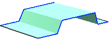
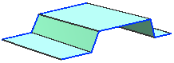

通过曲线组对话框中的对齐选项
保留形状通过强制公差值为 0.0，并替代逼近输出曲面的默认值以保留尖角。
清除此复选框后，会使用 G0（位置）连续性值，并对该截面中的任何尖角进行光顺，但使用较小的曲率半径。
|
清除保留形状复选框 |
 |
|
选中保留形状复选框 |
 |
对齐通过定义 NX 如何沿截面线串隔开新曲面的等参数曲线，来控制特征的形状。当保留形状复选框  清除时，对齐选项中有六个选项。当勾选选保留形状
清除时，对齐选项中有六个选项。当勾选选保留形状  复选框时，对齐选项中只剩下通过点和参数两个选项。
复选框时，对齐选项中只剩下通过点和参数两个选项。
要获取更多关于对齐选项的信息，参见 对齐选项.